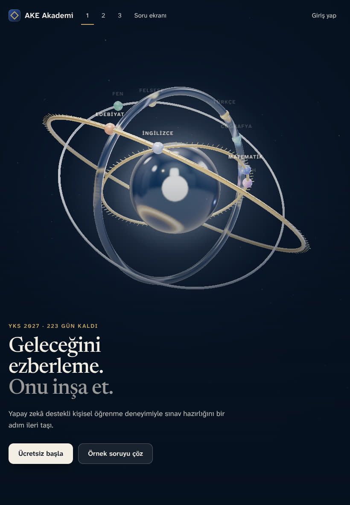
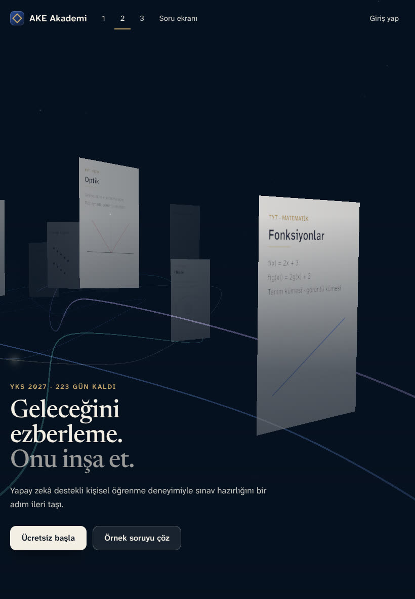
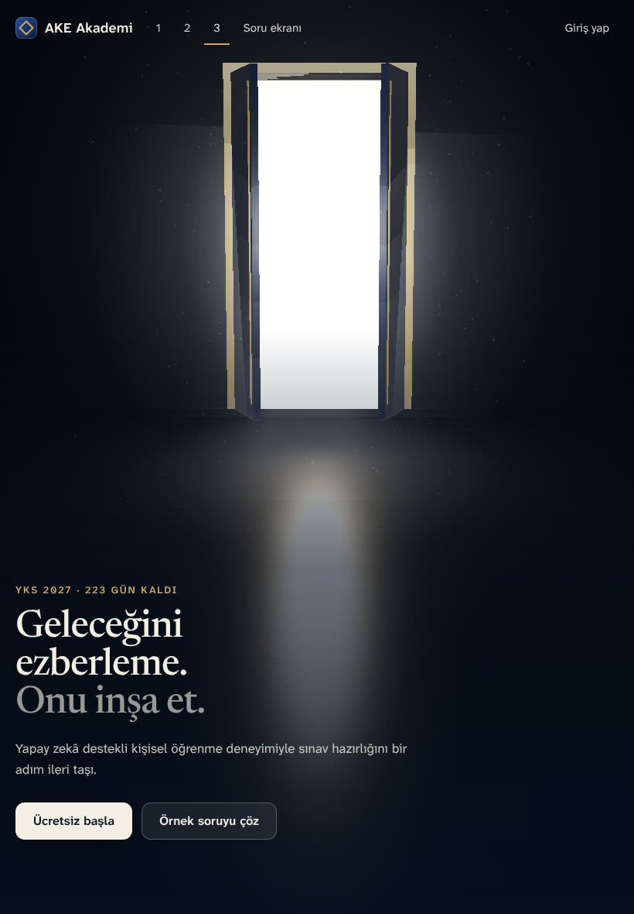
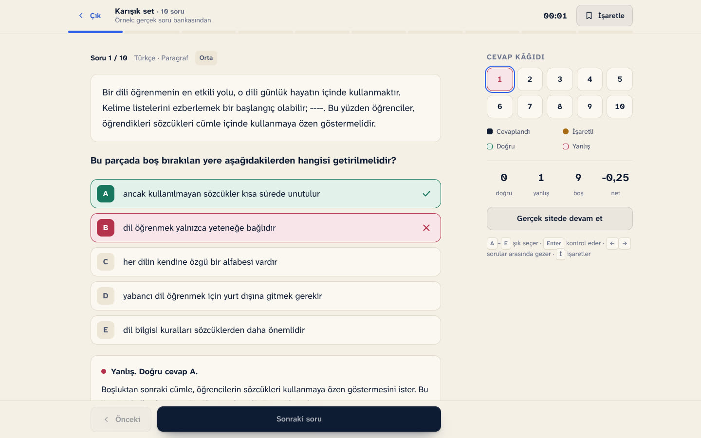
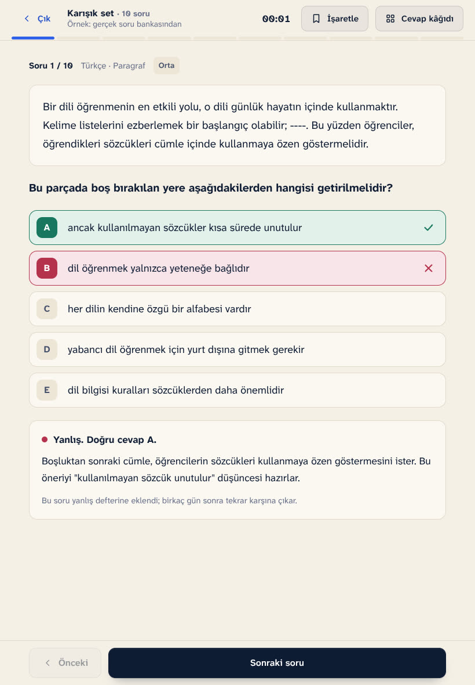
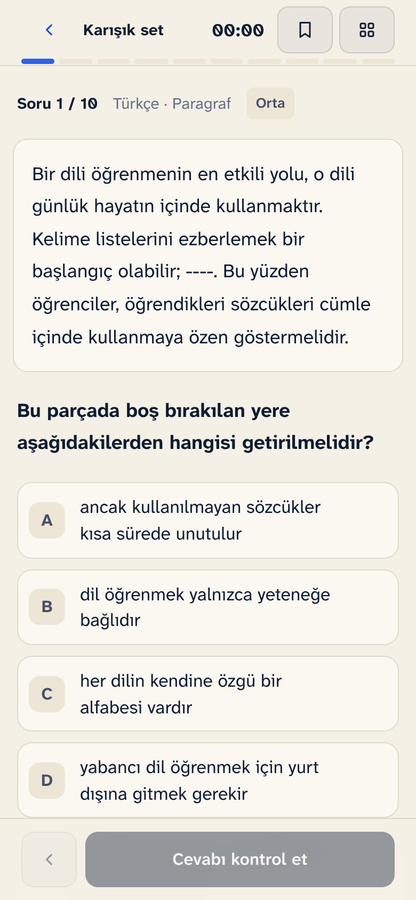

<title>AKE Akademi Açılış Konseptleri</title>
<meta name="claude:viewport-fit-sides" content="cover">
<link rel="stylesheet" href="../ortak/ortak.css">
<style>
/* Karar sayfası: üç açılış konsepti yan yana değil, sırayla; her biri canlı önizleme, ekran kaydı ve üç cihaz görünümüyle. */
body{background:var(--krem)}
.bant{background:radial-gradient(70% 120% at 80% 0%,#173a6b 0%,transparent 60%),var(--gece);color:var(--fildisi);padding:calc(44px + env(safe-area-inset-top,0px)) 0 56px}
.bant .marka{color:var(--fildisi);margin-bottom:40px;display:inline-flex}
.bant h1{font:500 clamp(36px,5vw,60px)/1.04 var(--serif);max-width:18ch;margin:14px 0 0}
.bant p{max-width:40em;color:rgba(244,239,228,.8);font-size:18px;margin:18px 0 0}
.icindekiler{display:flex;flex-wrap:wrap;gap:10px;margin-top:28px}
.kv{padding:clamp(56px,7vw,96px) 0;border-bottom:1px solid var(--cizgi)}
.kv:nth-of-type(even){background:var(--krem2)}
.kv-bas{display:grid;grid-template-columns:minmax(0,1fr) minmax(0,1fr);gap:24px 56px;align-items:end;margin-bottom:28px}
.no{font:700 13px/1 var(--sans);letter-spacing:.14em;text-transform:uppercase;color:var(--altin-koyu)}
.kv h2{font:500 clamp(32px,3.6vw,48px)/1.05 var(--serif);margin:10px 0 0;letter-spacing:-.015em}
.kv-bas p{margin:0;color:var(--murekkep2);font-size:17.5px}
.ekran{display:grid;grid-template-columns:minmax(0,3.2fr) minmax(0,1.25fr) minmax(0,.78fr);gap:18px;align-items:end}
.ekran figure{margin:0;display:grid;gap:10px}
.ekran figcaption{font-size:14px;color:var(--murekkep3)}
.cerceve{border-radius:14px;overflow:hidden;background:var(--gece);box-shadow:0 1px 0 rgba(13,27,51,.06),0 26px 50px -30px rgba(13,27,51,.55)}
.cerceve.tablet{border-radius:22px;border:7px solid #0d1626}
.cerceve.telefon{border-radius:30px;border:6px solid #0d1626}
.cerceve video,.cerceve img{display:block;width:100%;height:auto}
.degerlendirme{display:grid;grid-template-columns:repeat(3,minmax(0,1fr));gap:28px;margin-top:30px}
.degerlendirme h3{font:700 15px/1 var(--sans);letter-spacing:.08em;text-transform:uppercase;color:var(--murekkep3);margin:0 0 10px}
.degerlendirme ul{margin:0;padding-left:18px;color:var(--murekkep2);font-size:16px}
.degerlendirme li+li{margin-top:6px}
.kv .eylem{margin-top:26px}
.oneri{background:var(--yuzey);border-radius:20px;padding:28px;box-shadow:inset 0 0 0 1px var(--cizgi)}
.oneri h2{font:700 26px/1.2 var(--sans);margin:8px 0 12px}
.oneri p{margin:0 0 12px;max-width:52em;color:var(--murekkep2)}
.tablo{overflow-x:auto}
table{border-collapse:collapse;width:100%;min-width:560px;font-size:15.5px}
th,td{text-align:left;padding:12px 12px 12px 0;border-bottom:1px solid var(--cizgi);vertical-align:top}
th{font-size:13px;letter-spacing:.06em;text-transform:uppercase;color:var(--murekkep3)}
.d{font-weight:700}.d.ok{color:var(--dogru)}.d.no{color:var(--murekkep3)}
@media (max-width:1000px){.ekran{grid-template-columns:minmax(0,1.4fr) minmax(0,.8fr)}.ekran figure:first-child{grid-column:1/-1}.degerlendirme{grid-template-columns:1fr}.kv-bas{grid-template-columns:1fr}}
@media (max-width:640px){.ekran{grid-template-columns:minmax(0,1fr) minmax(0,.75fr);gap:12px}.kv .eylem .btn{width:100%}}
</style>

<header class="bant koyu"><div class="w">
  <span class="marka"><i aria-hidden="true"></i>AKE Akademi</span>
  <div class="ust-yazi">Tasarım revizyonu · 9 Kasım 2026</div>
  <h1>Üç açılış, tek bir çalışma alanı.</h1>
  <p>Üç konseptin de açılışı koyu ve sinematik. Kaydırınca hepsi aynı sıcak kırık beyaz çalışma alanına açılıyor. Her konseptin canlı önizlemesini açıp fareyle ve kaydırarak deneyebilirsin. Ekran kayıtları, hareketi telefonda görmen için.</p>
  <div class="icindekiler"><a class="btn" href="#k1">1 · Bilgi Çekirdeği</a><a class="btn ikincil" href="#k2">2 · Yaşayan Bilgi</a><a class="btn ikincil" href="#k3">3 · Eşik</a><a class="btn ikincil" href="../konseptler/4-esik-yasayan-bilgi-final/">4 · Eşik + Yaşayan Bilgi (Final)</a><a class="btn ikincil" href="#soru">Soru ekranı</a></div>
</div></header>

<main>
<section class="kv" id="k1" aria-labelledby="k1-b"><div class="w">
  <div class="kv-bas"><div><div class="no">Açılış konsepti</div><h2 id="k1-b">1 · Bilgi Çekirdeği</h2></div><p>Işıklı bir çekirdeği cam bir küre sarıyor. Çevresinde altın, çelik ve cam halkalar farklı eğimlerde dönüyor; sekiz ders bu halkaların üzerinde yörüngede. Fare ile sahne hafifçe eğiliyor. Kaydırınca halkalar kameraya dönüp göz bebeği gibi açılıyor, kamera çekirdeğe yaklaşıyor ve ışık kırık beyaz çalışma alanına dönüşüyor.</p></div>
  <div class="ekran">
    <figure><div class="cerceve"><video src="../medya/video/cekirdek_d.mp4" poster="../medya/gorsel/cekirdek_d.jpg" controls muted loop playsinline preload="none" aria-label="1 · Bilgi Çekirdeği: masaüstü ekran kaydı"></video></div><figcaption>Masaüstü · görsel 1440 piksel, ekran kaydı 1280 piksel: açılış ve kaydırma geçişi</figcaption></figure>
    <figure><div class="cerceve tablet"></div><figcaption>iPad</figcaption></figure>
    <figure><div class="cerceve telefon"><video src="../medya/video/cekirdek_m.mp4" poster="../medya/gorsel/cekirdek_m.jpg" controls muted loop playsinline preload="none" aria-label="1 · Bilgi Çekirdeği: iPhone ekran kaydı"></video></div><figcaption>iPhone · 390 piksel · ekran kaydı</figcaption></figure>
  </div>
  <div class="degerlendirme"><div><h3>Güçlü yanı</h3><ul><li>En güçlü odak noktası ve malzeme hissi: gerçek cam kırılması ve metal yansımaları.</li><li>Dersleri doğrudan gösteriyor. İleride halkalar sınavları, boncuklar senin ders başarını gösterebilir.</li><li>Marka simgesine dönüşebilecek kadar ayırt edici.</li></ul></div><div><h3>Zayıf yanı</h3><ul><li>Üçü içinde en ağır sahne; cam ek bir çizim adımı istiyor.</li><li>Eski telefonlarda kalite kendiliğinden düşüyor, ama yine de en çok pil harcayan bu.</li><li>Ders adları hareket hâlinde küçük kalıyor; asıl gezinme düğmelerde.</li></ul></div><div><h3>Ne hareket ediyor?</h3><ul><li>Halkalar dönerken eğimleri ve parlamaları değişiyor.</li><li>Kaydırma: dört halka tek merkezde hizalanıyor.</li><li>Açılış: ışık doğuyor, cam beliriyor, halkalar sırayla açılıyor.</li></ul></div></div>
  <div class="eylem"><a class="btn" href="../konseptler/1-bilgi-cekirdegi/">Canlı önizlemeyi aç</a></div>
</div></section>
<section class="kv" id="k2" aria-labelledby="k2-b"><div class="w">
  <div class="kv-bas"><div><div class="no">Açılış konsepti</div><h2 id="k2-b">2 · Yaşayan Bilgi</h2></div><p>Ders sayfaları karanlıkta kıvrılan bir öğrenme yolunun iki yanında asılı. Renkli ders yolları sayfaları birbirine bağlıyor, üzerlerinde ışık ilerliyor. Kaydırınca kamera yolda yürüyor; son sayfa yaklaşıp ekranı kaplıyor ve çalışma alanının kendisi oluyor.</p></div>
  <div class="ekran">
    <figure><div class="cerceve"><video src="../medya/video/yasayan_d.mp4" poster="../medya/gorsel/yasayan_d.jpg" controls muted loop playsinline preload="none" aria-label="2 · Yaşayan Bilgi: masaüstü ekran kaydı"></video></div><figcaption>Masaüstü · görsel 1440 piksel, ekran kaydı 1280 piksel: açılış ve kaydırma geçişi</figcaption></figure>
    <figure><div class="cerceve tablet"></div><figcaption>iPad</figcaption></figure>
    <figure><div class="cerceve telefon"><video src="../medya/video/yasayan_m.mp4" poster="../medya/gorsel/yasayan_m.jpg" controls muted loop playsinline preload="none" aria-label="2 · Yaşayan Bilgi: iPhone ekran kaydı"></video></div><figcaption>iPhone · 390 piksel · ekran kaydı</figcaption></figure>
  </div>
  <div class="degerlendirme"><div><h3>Güçlü yanı</h3><ul><li>İçerikle en çok bağı olan konsept: sayfalarda gerçek konu başlıkları var.</li><li>Hikâyesi en net: sayfa, çalışma masasına dönüşüyor.</li><li>Cam kullanmadığı için daha hafif.</li></ul></div><div><h3>Zayıf yanı</h3><ul><li>Görsel olarak en sade olanı; ilk bakışta daha az çarpıcı.</li><li>Uzaktaki sayfaların yazısı okunmuyor, yalnızca doku olarak kalıyor.</li><li>Kâğıtlar düz yüzey; malzeme hissi diğer ikisinden zayıf.</li></ul></div><div><h3>Ne hareket ediyor?</h3><ul><li>Sayfalar açılışta dağınıktan yerine uçuyor.</li><li>Ders yolları çizilerek beliriyor.</li><li>Kaydırma: kamera yol boyunca ilerliyor, derinlik yan yana geçen sayfalardan geliyor.</li></ul></div></div>
  <div class="eylem"><a class="btn" href="../konseptler/2-yasayan-bilgi/">Canlı önizlemeyi aç</a></div>
</div></section>
<section class="kv" id="k3" aria-labelledby="k3-b"><div class="w">
  <div class="kv-bas"><div><div class="no">Açılış konsepti</div><h2 id="k3-b">3 · Eşik</h2></div><p>Karanlık bir salonun sonunda kapalı bir kapı. Açılışta aralığından ışık sızıyor, kapı aralanıyor; zeminde ışık havuzu, havada süzülen toz var. Kaydırınca kamera eşikten geçiyor; karanlık geride kalıyor ve öğrenci aydınlık çalışma alanına giriyor.</p></div>
  <div class="ekran">
    <figure><div class="cerceve"><video src="../medya/video/esik_d.mp4" poster="../medya/gorsel/esik_d.jpg" controls muted loop playsinline preload="none" aria-label="3 · Eşik: masaüstü ekran kaydı"></video></div><figcaption>Masaüstü · görsel 1440 piksel, ekran kaydı 1280 piksel: açılış ve kaydırma geçişi</figcaption></figure>
    <figure><div class="cerceve tablet"></div><figcaption>iPad</figcaption></figure>
    <figure><div class="cerceve telefon"><video src="../medya/video/esik_m.mp4" poster="../medya/gorsel/esik_m.jpg" controls muted loop playsinline preload="none" aria-label="3 · Eşik: iPhone ekran kaydı"></video></div><figcaption>iPhone · 390 piksel · ekran kaydı</figcaption></figure>
  </div>
  <div class="degerlendirme"><div><h3>Güçlü yanı</h3><ul><li>Dönüşümü en doğrudan anlatan konsept: karanlıktan aydınlığa.</li><li>Işık en sinematik olanı; tek ve güçlü bir odak var.</li><li>Telefonda da kolay okunuyor; kapı üstte, metin altta.</li></ul></div><div><h3>Zayıf yanı</h3><ul><li>Ders ve konu bilgisi göstermiyor; tamamen atmosfer.</li><li>Kapı fikri bazılarına alışıldık gelebilir.</li><li>Geçişin ortasında, kapıdan geçerken kısa bir an çok parlak.</li></ul></div><div><h3>Ne hareket ediyor?</h3><ul><li>Kapı kanatları menteşeden açılıyor.</li><li>Toz ışığın içinde yükseliyor.</li><li>Kaydırma: kamera yürüyerek eşikten geçiyor.</li></ul></div></div>
  <div class="eylem"><a class="btn" href="../konseptler/3-esik/">Canlı önizlemeyi aç</a></div>
</div></section>

<section class="kv" id="soru" aria-labelledby="soru-b"><div class="w">
  <div class="kv-bas"><div><div class="no">Çalışma ekranı</div><h2 id="soru-b">Soru çözme</h2></div><p>Soru ve şıklar merkezde, tanıtım metni yok. Üstte süre ve işaretleme, altta önceki ve sonraki düğmeleri. Masaüstünde sağda cevap kâğıdı; tablette ve telefonda alttan açılıyor. Sorular gerçek soru bankasından.</p></div>
  <div class="ekran">
    <figure><div class="cerceve"></div><figcaption>Masaüstü · 1440 piksel</figcaption></figure>
    <figure><div class="cerceve tablet"></div><figcaption>iPad</figcaption></figure>
    <figure><div class="cerceve telefon"></div><figcaption>iPhone · 390 piksel</figcaption></figure>
  </div>
  <div class="eylem"><a class="btn" href="../calisma/soru.html">Soru ekranını dene</a></div>
</div></section>

<section class="kv" aria-labelledby="oneri-b"><div class="w">
  <div class="oneri"><div class="no">Benim görüşüm</div><h2 id="oneri-b">Önerim: 1 · Bilgi Çekirdeği</h2><p>Üçü içinde AKE Akademi'ye en özgü ve en akılda kalanı bu. Cam ve metal malzeme, tek bir güçlü odak noktası ve gerçek derinlik var. En önemlisi, ileride gerçek veriye bağlanabilir: halkalar TYT, AYT ve YDT'yi, boncuklar senin derslerdeki başarını gösterebilir.</p>
<p>Eşik ışık ve dönüşüm anlatımında daha güçlü, ama ders bilgisi taşımıyor. Yaşayan Bilgi en anlamlı hikâyeye sahip, ama görsel olarak diğer ikisinin gerisinde kalıyor.</p>
<p>Bilgi Çekirdeği'nin bedeli performans: üçü içinde en ağır sahne o. Seçersen eski telefonlar için daha hafif bir sürüm (cam yerine parlak metal) hazırlarım. Gerçek iPhone ve iPad'inde akıcılığına mutlaka sen de bak.</p></div>
</div></section>

<section class="kv" aria-labelledby="durum-b"><div class="w">
  <div class="kv-bas"><div><div class="no">Kontrol</div><h2 id="durum-b">Neyi denedim, neyi deneyemedim?</h2></div><p>Bu önizleme canlı siteye yüklenmedi. Mevcut kod, giriş sistemi, soru havuzu ve veriler değişmedi.</p></div>
  <div class="tablo"><table>
    <thead><tr><th>Konu</th><th>Durum</th><th>Not</th></tr></thead>
    <tbody><tr><td>Masaüstü 1440, iPad 820 ve iPhone 390 görünümleri</td><td><span class="d ok">Geçti</span></td><td>Her konseptte ekran görüntüsü alıp tek tek baktım. Yatay taşma yok.</td></tr><tr><td>Açılıştan aydınlık alana kaydırma geçişi</td><td><span class="d ok">Geçti</span></td><td>Üç konseptte de çalışıyor. Ekran kayıtlarında görebilirsin.</td></tr><tr><td>Animasyonu geç düğmesi</td><td><span class="d ok">Geçti</span></td><td>İlk karede görünüyor. Esc tuşu da geçiriyor. Tercih her konsept için ayrı hatırlanıyor. “Açılışı tekrar oynat” alt kısımda.</td></tr><tr><td>Hareket azaltma</td><td><span class="d ok">Geçti</span></td><td>Cihazda hareket azaltma açıksa açılış oynamıyor, sahne durağan, geçiş bölümü kalkıyor. Ayrıca “Hareketi kapat” düğmesi var.</td></tr><tr><td>Grafik desteği olmayan cihaz</td><td><span class="d ok">Geçti</span></td><td>3B yerine sade bir arka plan görünüyor, metin ve düğmeler çalışıyor.</td></tr><tr><td>Yazı tipleri yerel dosyada</td><td><span class="d ok">Geçti</span></td><td>Atkinson Hyperlegible Next (arayüz ve soru metni) ve Newsreader (yalnızca açılış başlığı) WOFF2 olarak gömülü. Türkçe harflerin hepsi kontrol edildi. ₺ işareti arayüz yazı tipinde yok, yedek yazı tipinden geliyor.</td></tr><tr><td>Three.js</td><td><span class="d ok">Geçti</span></td><td>Sürüm r160, yerel dosya, CDN yok. Yalnızca açılış sayfasında yükleniyor (670 KB).</td></tr><tr><td>Dokunma alanları en az 44 piksel</td><td><span class="d ok">Geçti</span></td><td>Konsept sayfalarında ve soru ekranında ölçüldü.</td></tr><tr><td>Türkçe yazım ve noktalama</td><td><span class="d ok">Geçti</span></td><td>Bütün kullanıcı metinlerini tek tek okudum.</td></tr><tr><td>Gerçek iPhone ve iPad'de akıcılık ve pil</td><td><span class="d no">Test edilmedi</span></td><td>Benim ortamımda ekran kartı yok; çizim yazılımla yapılıyor ve çok yavaş. Oradaki kare hızı gerçek cihazı yansıtmaz. Görünmezken çizim duruyor, yavaşlarsa çözünürlük kendiliğinden düşüyor.</td></tr><tr><td>Hız ölçümü (LCP, INP, CLS)</td><td><span class="d no">Test edilmedi</span></td><td>Gerçek ağda ve gerçek cihazda ölçülmesi gerekiyor; sahte rakam vermiyorum.</td></tr></tbody>
  </table></div>
</div></section>
</main>
<footer class="alt"><div class="w"><span>AKE Akademi · Tasarım önizlemesi</span><span>Bu sayfadaki paneldeki rakamlar örnektir.</span></div></footer>
